〒567-0872 大阪府茨木市新中条町10-16 コーポヤマ1-A
電話 072-631-5280
| 午前 | 午後 | |
|---|---|---|
| 平日 | 9:00〜12:30 | 15:30〜20:30 |
| 土曜 | 9:00〜12:30 | 14:00〜18:00 |
| 日曜・祝日 | 9:00〜15:00 | |
お休み: 火曜(祝日と重なる日も休み)・年末年始
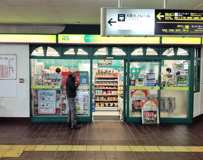
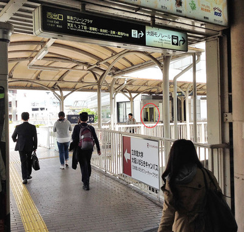
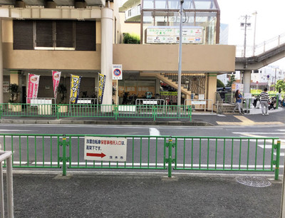
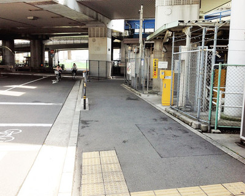
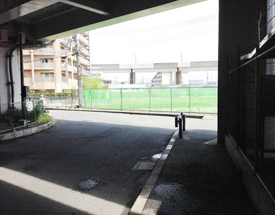
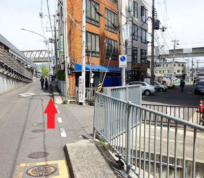
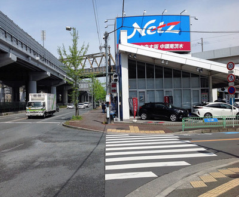
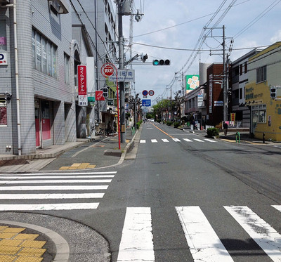
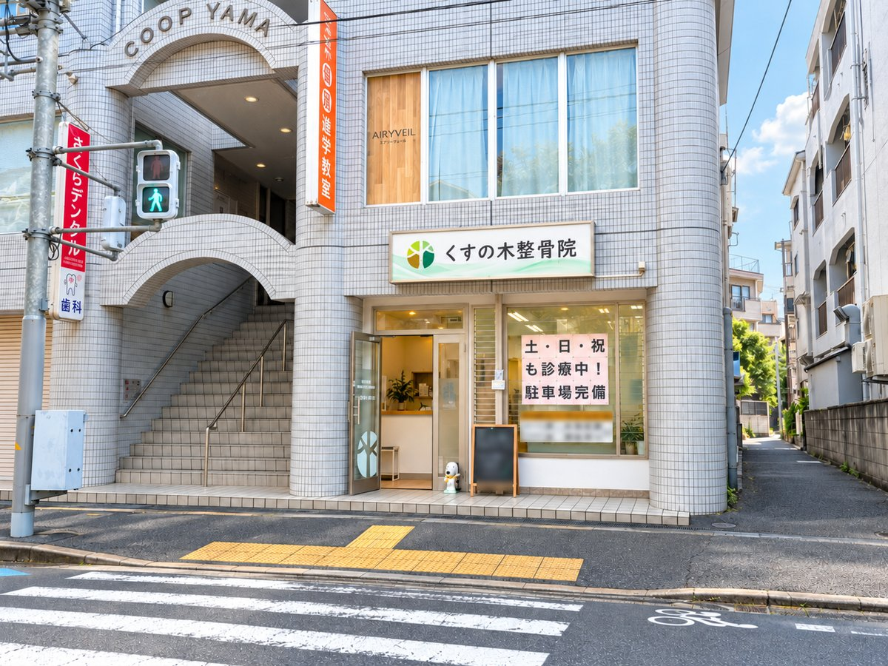
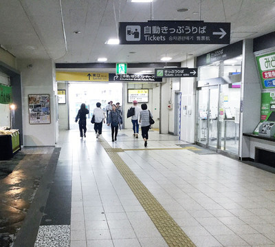
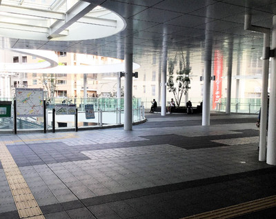
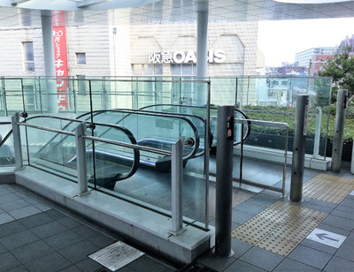
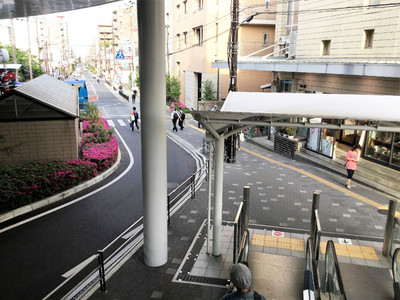
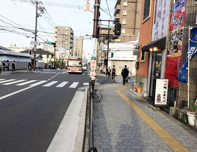
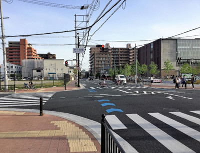
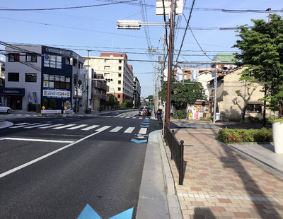
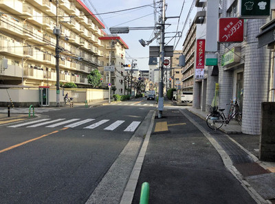
駐車場は、当院の建物の裏手にある「センチュリーパーク新中条町第2」の13番です(普通車まで)。柵に「くすの木整骨院 駐車場」の札があります。お車でお越しの方は、ご予約の際にお伝えください。
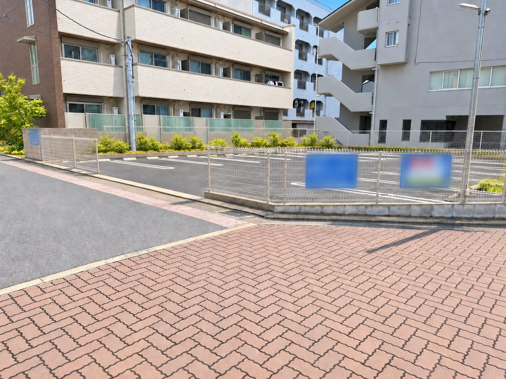
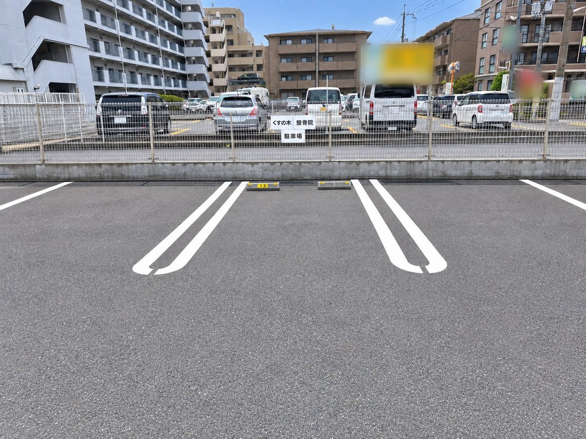
駐車場は1台のため、ご予約の際に空いている時間をご案内しています。ご希望の時間に枠が空いていない場合は、整骨院の裏手に有料のコインパーキングがありますので、そちらをご利用ください。
駐輪場があります。自転車でお越しの方はそちらにお停めください。
建物「コーポヤマ」の1階、1-Aが当院です。「小川町南」交差点のすぐそばです。